pt cm
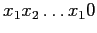
qui est fractionnée en plusieurs unités : l'identificateur de groupe, l'identificateur d'éditeur, l'identificateur de titre et le bit de parité. Cette subdivision apporte donc de l'information (qu'il est toutefois possible de retrouver avec seulement la suite sans les tirets).
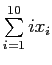
qui est changé et cette somme risque fort de ne plus valoir zéro.
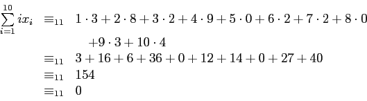
Donc,
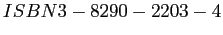
est un bon code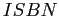
.
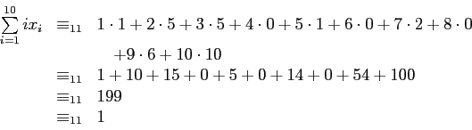
Donc,
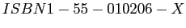
n'est pas un bon code .
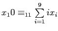
. Dans le premier cas, on obtient
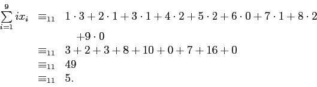
Donc, le bit de parité est
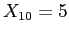
.Dans le deuxième cas, on obtient
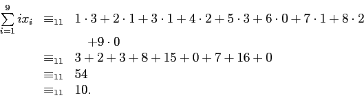
Ainsi, le bit de parité est
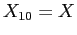
.
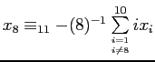
. On obtient
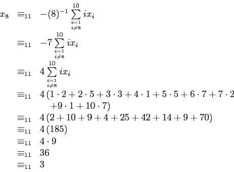
Donc,
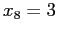
.
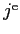
symbole qui est effacé, de prendre la formule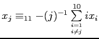
.
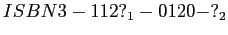
où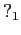
et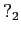
sont des symboles illisibles. Alors, on a vu à l'exercices 1.3.4 que si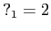
, alors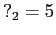
et que si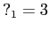
, alors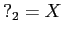
. Ainsi, les mots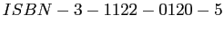
et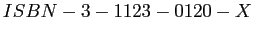
sont tous deux bons codes et il est donc impossible de reconstituer le code dans ambiguïté.
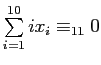
. Cela ne l'assure pas que le code n'est pas erroné. En effet, si le vrai code est et qu'on a changé le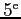
et le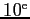
bits pour obtenir , alors l'erreur ne sera pas noté (voir exercices 1.4.3).